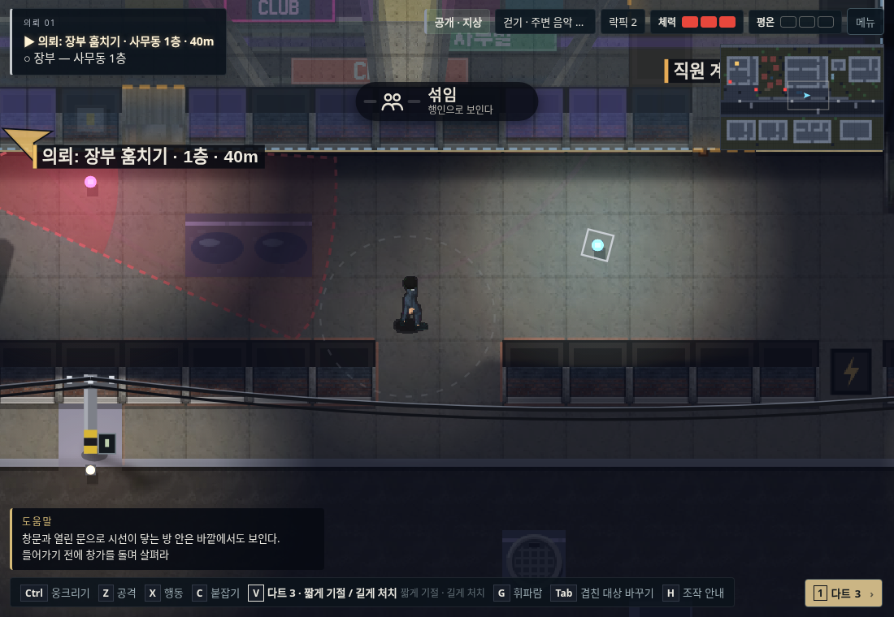
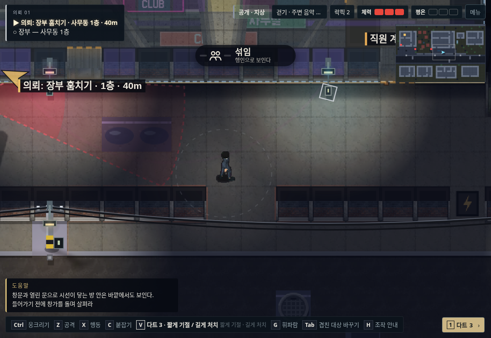
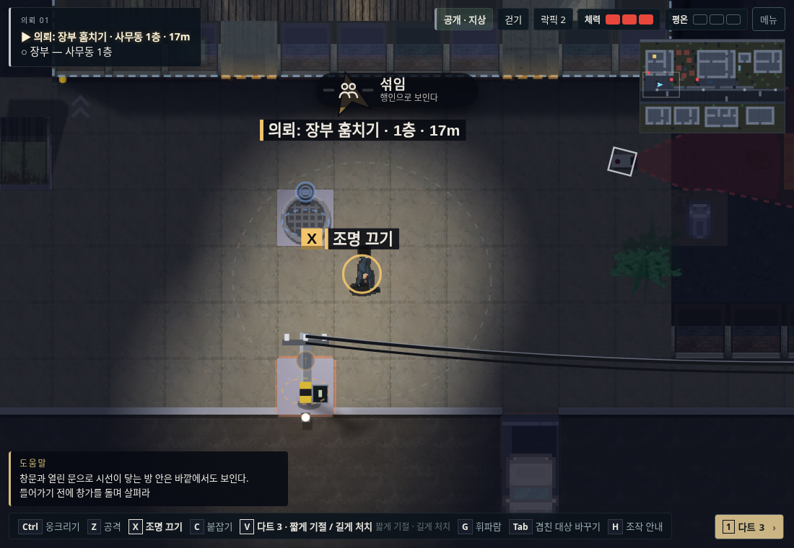
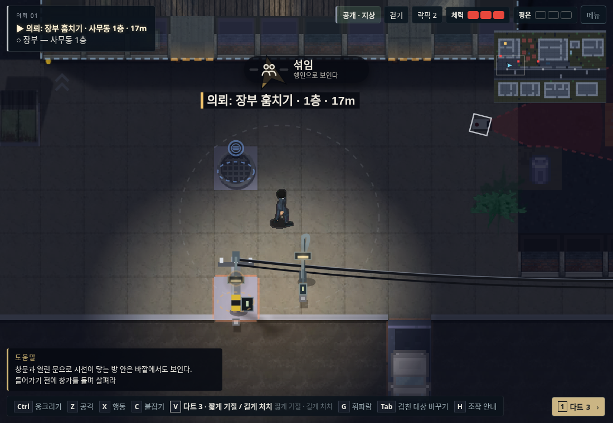

야행 v95 · 조명에 실제 지지대 연결
길 위의 빛나는 점을 외벽등·가로등·전신주 보안등으로 구분했습니다. 조작 위치도 벽과 기둥의 스위치에 연결했습니다.
게임 실행 · 변경·검증 내역
클럽 주변 · 빛나는 점에서 벽부등으로
가까운 실제 외벽에 설치하고 새 광원 위치에서 빛과 그림자를 계산합니다. 기존 전신주에도 등갓과 지지대를 붙였습니다.
v94 · 길 위에 광원만 표시
v95 · 외벽 조명과 전신주 보안등
열린 길 · 보도 가장자리의 가로등
가로등에는 기둥·등갓·밑판·스위치를 표시하고 작은 기둥 충돌을 연결했습니다. 기존 전신주와 겹치지 않도록 배치했습니다.
v94 · 길 가운데의 조명
v95 · 가장자리로 옮긴 가로등
동일한 캐릭터 위치·카메라·화면 크기로 찍은 비교입니다. 비교를 위해 NPC를 제외했습니다. 별도 검사에서는 조작과 실제 NPC 일과·경로를 확인했습니다.